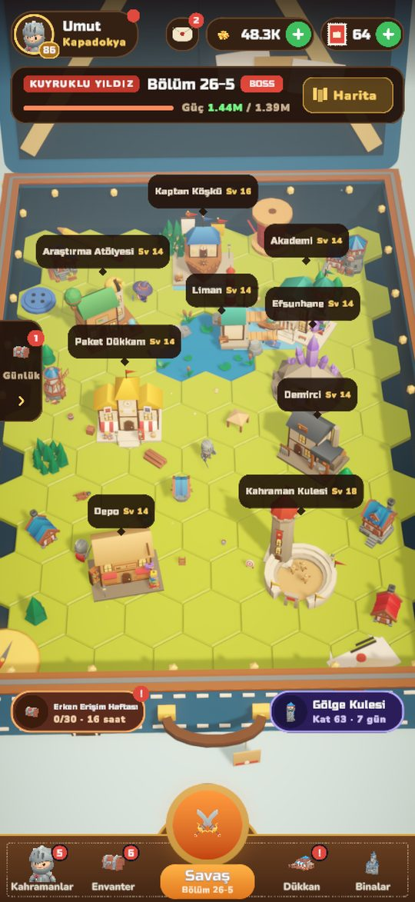
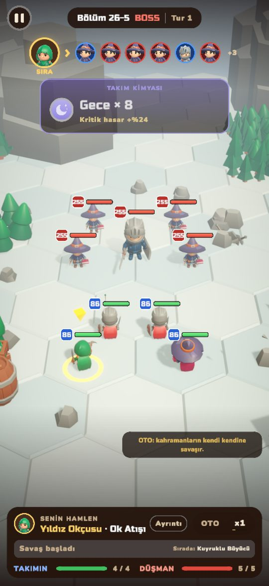
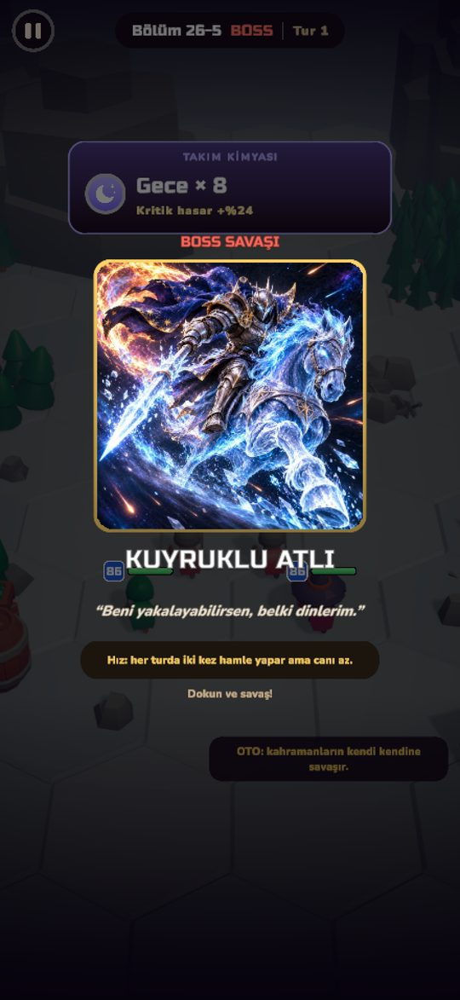
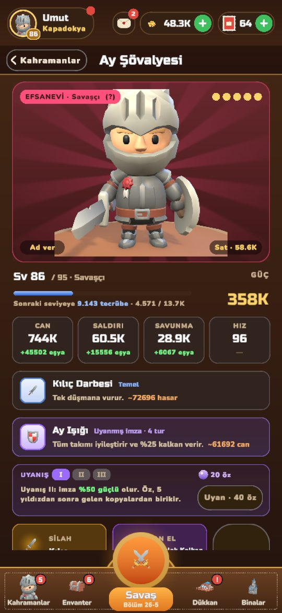
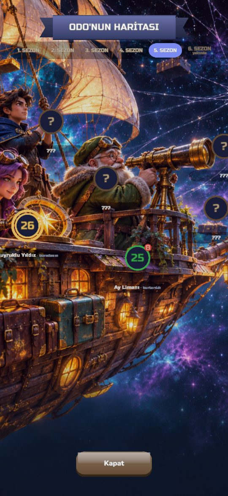
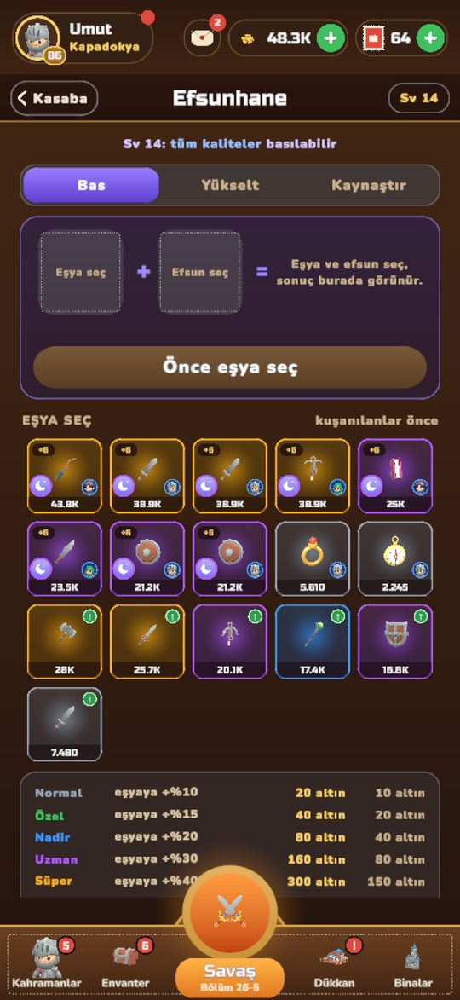
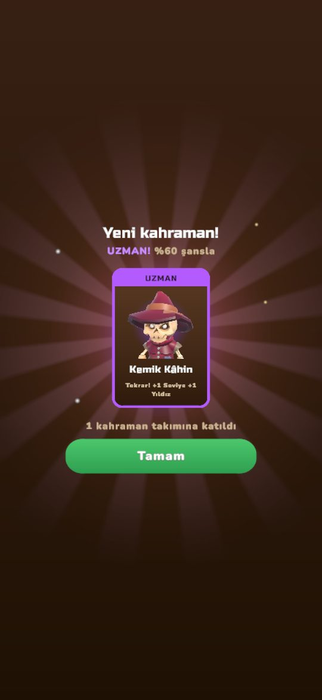
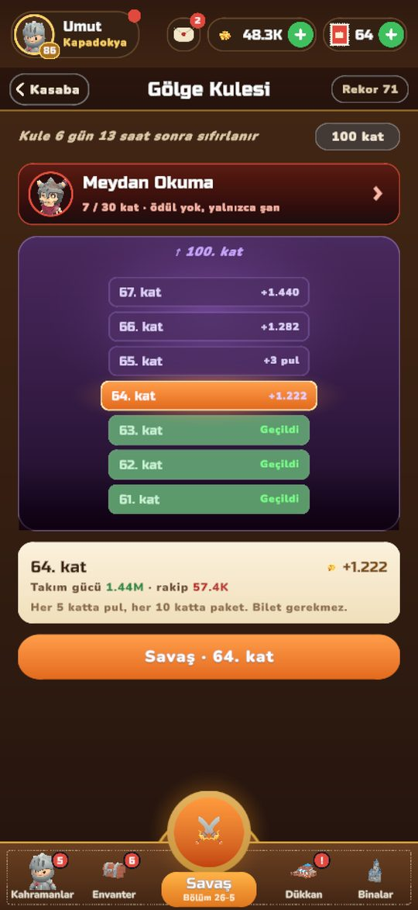
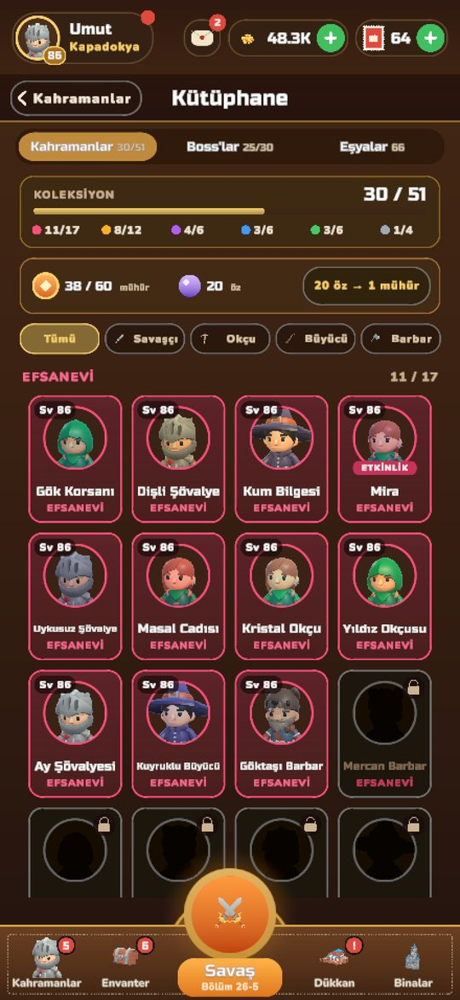

Bölüm 1–10
Bölüm 1–10 Bölüm 11–20
Bölüm 11–20 Bölüm 21–30
Bölüm 21–30 Bölüm 31–40
Bölüm 31–40 Bölüm 41–50
Bölüm 41–50 Bölüm 51–60
Bölüm 51–60
YENİ: 3, 4 VE 5. SEZON · iPhone
Bavulunda bir kasaba büyüt, kahramanlarını topla, dünyayı bavul bavul kurtar!
Gezgin mucit Odo'nun tüm diyarları bavullara saklanmıştı… ta ki Gölge İmparatoru gelene dek. Şimdi elinde tek bir eski deri bavul var. Ve yanında sen.
SÜRÜM 1.1 · ŞİMDİ APP STORE'DA
Odo'nun yolculuğu üç sezon birden uzadı! Rüya Bavulları, Derin Bavullar ve Yıldız Bavulları seni bekliyor.

Her bavul ayrı bir bölge, ayrı bir düşman ordusu ve ayrı bir boss demek.
1. Sezon · Gölge İmparatoru
Bölüm 1–10Bölüm 11–20Bölüm 21–30Bölüm 31–40Bölüm 41–50Bölüm 51–602. Sezon · Karanlık Bavullar
 Bölüm 61–70
Bölüm 61–70 Bölüm 71–80
Bölüm 71–80 Bölüm 81–90
Bölüm 81–90 Bölüm 91–100
Bölüm 91–100 Bölüm 101–110
Bölüm 101–110 Bölüm 111–120
Bölüm 111–1203. Sezon · Rüya Bavulları
 Bölüm 121–130
Bölüm 121–130 Bölüm 131–140
Bölüm 131–140 Bölüm 141–150
Bölüm 141–150 Bölüm 151–160
Bölüm 151–160 Bölüm 161–170
Bölüm 161–170 Bölüm 171–180
Bölüm 171–1804. Sezon · Derin Bavullar
 Bölüm 181–190
Bölüm 181–190 Bölüm 191–200
Bölüm 191–200 Bölüm 201–210
Bölüm 201–210 Bölüm 211–220
Bölüm 211–220 Bölüm 221–230
Bölüm 221–230 Bölüm 231–240
Bölüm 231–2405. Sezon · Yıldız Bavulları
 Bölüm 241–250
Bölüm 241–250 Bölüm 251–260
Bölüm 251–260 Bölüm 261–270
Bölüm 261–270 Bölüm 271–280
Bölüm 271–280 Bölüm 281–290
Bölüm 281–290 Bölüm 291–300
Bölüm 291–300Oyunun güncel sürümünden. Okları kullan ya da parmağınla kaydır.









Metroda kısa bir oturum için de, uzun soluklu bir macera için de.
Kaptan Köşkü, Demirci, Akademi, Efsunhane, Liman… Her bina yeni bir özellik ve kalıcı bir takım bonusu açar.
Normal'den Efsanevi'ye altı nadirlik. Nadir kahramanların imza yetenekleri 5 yıldızda uyanır ve güçlenir.
Diziliş, sınıf üstünlüğü ve doğru hedef. 2. sezondan itibaren her bavulun kendi kuralı var; 30 boss'un her birinin de kendine has bir hilesi.
Eşyalarına Güneş, Gece, Fırtına ya da Doğa efsunu bas. Aynı efsunu taşıyan takım birlikte güçlenir.
Her hafta sıfırlanan 100 katlı kule, 30 katlı Meydan Okuma ve 4 haftada bir yenilenen Sezon Ligi. Hepsi Game Center sıralamalarında.
Etkinliklerde yalnızca orada verilen kahramanları kazan; kurtardığın bavulların boss'larını her hafta yenip pul topla.


Peri bacalarından Kara Delik'e, 30 bavul: her durakta seni bir boss bekliyor.
1. Sezon


2. Sezon · Karanlık Bavullar


3. Sezon · Rüya Bavulları


4. Sezon · Derin Bavullar


5. Sezon · Yıldız Bavulları


Bir sorun mu yaşadın, bir fikrin mi var? Bize yaz: bavulkasabasi@gmail.com. Oyunun sürümünü (Ayarlar → Hakkında) ve telefon modelini eklersen daha hızlı yardımcı olabiliriz.
Telefonunda iCloud açıksa oyun kaydın kendi iCloud hesabına yedeklenir. Oyunu aynı Apple kimliğiyle açtığında "Kaydın Bulundu" penceresi çıkar ve kaldığın yerden devam edersin. Ayarlar ekranının altında yedeğin açık olup olmadığı yazar.
Geçtiğin bölümleri tekrar oyna, kahramanlarına seviye atlat, eşyalarını güçlendir ve dizilişi ayarla (büyücü ve okçu arkaya). Akademi, Atölye, Sefer ve etkinlikler de altın kazandırır. Ana ekrandaki "Sıradaki" şeridi ne yapman gerektiğini söyler.
Nadirlik: 1 elmas Normal, 6 elmas Efsanevi. Kahraman detayında nadirlik etiketine dokunarak Nadirlik Rehberi'ni açabilirsin.
Her sezon 60 bölüm sürer; sezonun son boss'unu yenince hikâye seni bir sonraki sezona taşır (60, 120, 180 ve 240. bölümler). Sonsuz Yol'da ilerlediysen güncellemeyle yeni sezonun başına geçersin, kat ettiğin yol pulla ödenir. Geçtiğin bavullara Odo'nun Haritası'ndan her zaman dönebilirsin.
Ayarlar → Hesabı ve verileri sil. Telefondaki kaydın, iCloud yedeğin, anonim oyuncu kimliğin ve kullanım verilerin silinir. Ayrıntılar: Gizlilik Politikası.